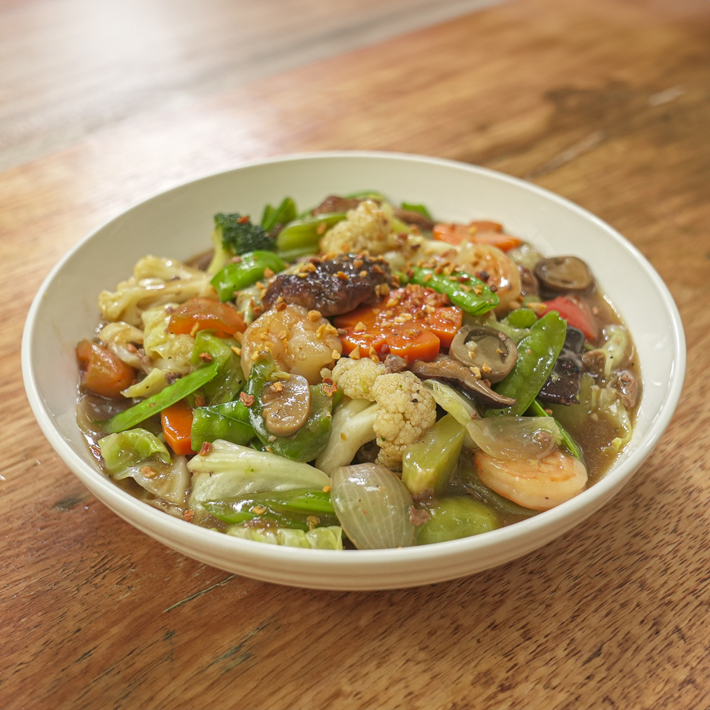

Chop Suey

Chop Suey oh yeah
Chop Suey is a stir-fried vegetable dish that is cooked with meats such as chicken and pork. Shrimp and seafood can also be added. This chop suey recipe is special because it has almost every ingredient present. Chicken, pork, shrimp, and boiled quail eggs were all included in the recipe, along with fresh veggies.
Ingredients
- 7 pieces shrimp cleaned and deveined
- 3 ounces pork sliced
- 3 ounces boneless chicken breast sliced
- 1 piece carrot sliced crosswise into thin pieces
- 15 pieces snow peas
- 8 pieces baby corn
- 1 piece red bell pepper sliced into squares
- 1 piece green bell pepper sliced into squares
- 1 ½ cups cabbage chopped
- 12 pieces quail eggs boiled
- 1 piece yellow onion sliced
- 4 cloves garlic crushed
- ¼ cup soy sauce
- 1 ½ tablespoons oyster sauce
- ¾ cup water
- 1 tablespoon cornstarch diluted in ½ cup water
- ¼ teaspoon ground black pepper
- 3 tablespoons cooking oil
- Heat oil in a wok or pan.
- Pan fry the shrimp for 1 minute per side. Remove from the wok. Set aside.
- Saute onion. Add garlic and continue to saute until the onion becomes soft.
- Add pork and chicken. Stir fry until light brown.
- Add soy sauce and oyster sauce. Stir.
- Pour water. Let boil. Cover and cook in medium heat for 15 minutes.
- Add cauliflower, carrots, bell peppers, snow peas, and young corn. Stir.
- Add cabbage. Toss. Cover and cook for 5 to 7 minutes.
- Put the pan-fried shrimp into the pot and add ground black pepper.
- Add the boiled quail eggs and cornstarch diluted in water. Toss.
- Transfer to a serving plate. Serve.
- Share and enjoy!
Notes
Cooking Tips
- There are many ways to cook chop suey. Make sure to not overcook the veggies regardless of the version that you are cooking.
- Try to avoid using canned quail eggs if possible. Boiled fresh quail eggs tastes good and more natural.
- Slice the meats as thin as possible for it to cook and tenderize quickly.
- Adding baby corn or young corn to makes your dish look and taste better.
- Use both red and green bell peppers to make your dish vibrant and enticing.
Back to Home